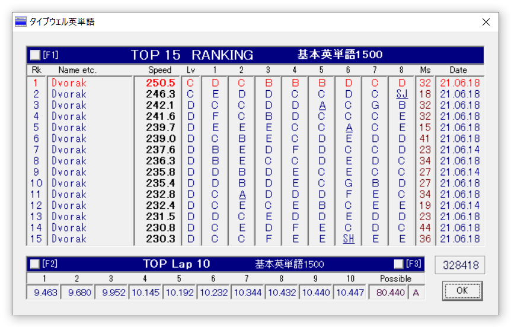

前回と比較して、一度本気で練習しようと思うとやっぱり伸びるのは早いものだと思う。単純に練習量に比例してると思う。
ところで前回はe-typing英語のスコアとだいぶタイプウェル英単語のスコアには開きがあったけれど、実は今は同じC。不思議なものだと思うけれど、e-typing英語の方はtheとかisとかよく入力する単語が多くて元々速かったのに比べて、タイプウェル英単語は比較的アトランダムなのが関係してると思う。単語自体の難易度はそれほど高くないのであれだけど、 https://learn.dvorak.nl/ のように単語が難しいとやっぱりそれなりに時間がかかるので、特定のパターンへの習熟度なんだろうな。